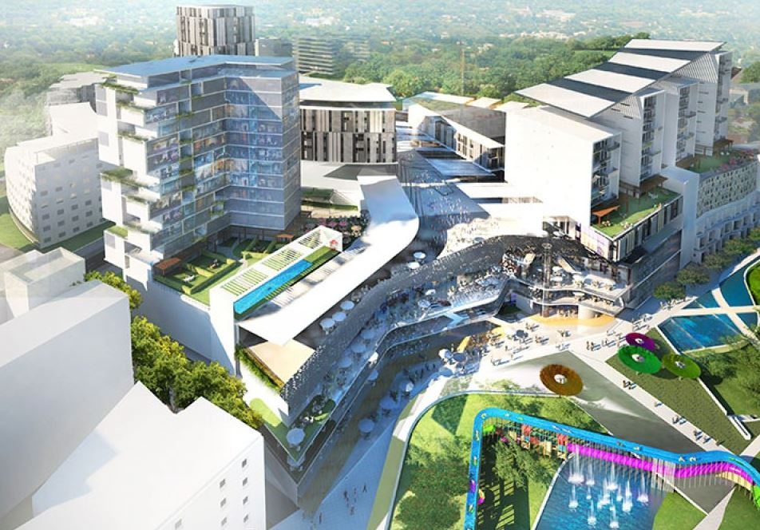

Nairobi is decaying, choking and mired in shopping malls
Having resided in Eastlands for most of my life in Nairobi, it still feels like home every time I drive through the estates.
The more affluent areas of Nairobi like Karen, Lavington and Muthaiga were my tourist destinations, where I visited once in a while to attend church or travel to what we referred to as arcades or shopping centres.
I was attracted to the beauty of their architectural designs. The St. Austin’s Church at St. Mary’s School was baronial to me. It has powerful messages on the inside and outside, and it will be centuries before we make such a powerful statement in architecture again.
Karen Shopping Centre, though small, had some character. Today it stands bewildered in a morass of urban architectural abuse.
Negative impact of malls
Shopping malls are often built on land which is important to the survival of birds and wild animals. It covers large areas with the parking lot and the building itself and instead of trees and grassland. Even though it contributes to global warming and less clean breath for us but people are still making more malls. It is usually built far away from a city and a town center which means people must go on their cars ,resulting an increased air pollution. ...........
Types of malls
- Neighborhood Center
- Community Center
- Regional Center
List of malls in Kenya
- Runda Mall
- Maasai Mall
- Galleria Mall
Check out Thika Road Mall.Advocate for genaral enquiries
For feedbacks contact